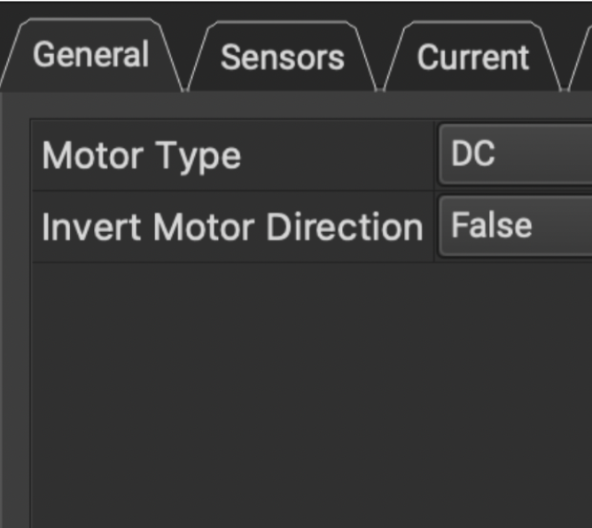
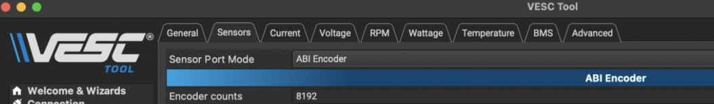
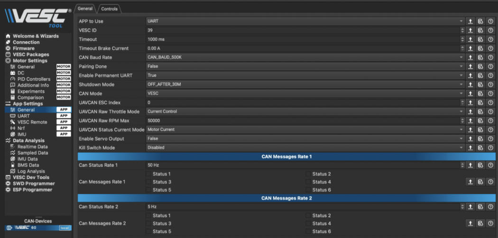
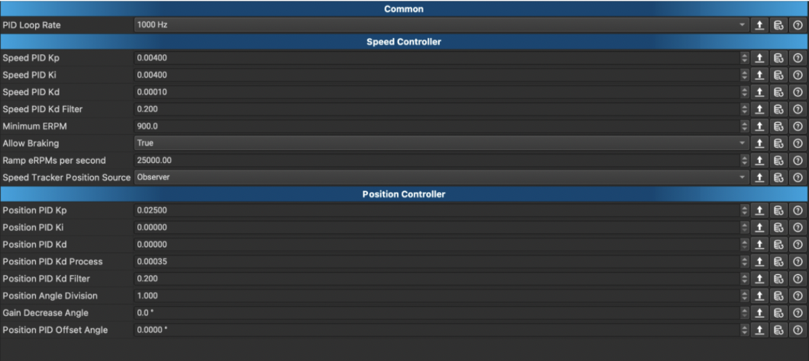

JeepBot Setup Guide
VESC, Encoder, F710 Controller & Raspberry Pi
This guide explains how to set up the JeepBot steering encoder, configure the VESCs, install the required Python packages, connect the Logitech F710 controller, and run the dual VESC control script on the Raspberry Pi.
Before You Start
Make sure you have the main hardware and software ready before changing any VESC settings.
Logitech F710Raspberry Pi2x VESCpyserial, pygame, PyVESCMotor & Encoder Setup
In VESC Tool, configure the steering VESC as a brushed DC motor and make sure the encoder feedback is enabled.
Go to Motor Settings → General → Motor Type.
Set it to DC, Brushed Motor.
Set the motor and battery current limits based on your hardware. If the VESC red light blinks or the battery cannot handle the load, lower the current values.

VESC App Configuration
The Raspberry Pi sends commands to the VESC through serial, so the VESC app must be set to UART. The steering VESC also needs the encoder selected as its position sensor.
Go to Additional Info → General → Position Sensor.
Set Position Sensor to Encoder.
Go to App Settings → General.
Set App to Use to UART.
Click Write App Config after changing the app settings.



PID Position Setup & Real-Time Test
Use VESC Tool real-time data to check if the steering encoder position changes correctly. Then tune the PID values until the steering motor moves smoothly without shaking or overshooting.
Go to Data Analysis → Real-time Data → PID Pos.
Move the steering left and right and confirm the encoder value changes.
Go to Motor Settings → PID Control.
Adjust PID values slowly until the steering response is smooth.
After tuning, click Write Motor Config and Write App Config.


Raspberry Pi Setup
Flash the Raspberry Pi SD card with the correct Raspberry Pi OS image. For this setup, use the Legacy 64-bit image. After booting, connect the Pi to the JeepBot network and SSH into it.
jeepbotjeepbotUCSDRoboCar192.168.139.223ssh jeepbot@192.168.139.223Test Setup on Laptop
Before running the full setup on the Raspberry Pi, you can install PyVESC and the required packages on your laptop to check that the code environment is working.
git clone https://github.com/LiamBindle/PyVESC.git
cd PyVESC
pip install -e .
cd ~/JeepBot_Vesc/dual_vesc_drive_package
pip install -r requirements-steering.txtRun on Raspberry Pi
After copying the JeepBot project folder to the Raspberry Pi, activate the Python environment, go into the controller folder, install the required packages, and run the controller script.
ssh jeepbot@192.168.139.223Use the environment that has your JeepBot packages installed.
source ~/jeepbot/bin/activateIf your project uses the old environment, use this instead:
source ~/env/bin/activatecd ~/myjeepbot/mycarpip install pyserial pygame
pip install -r requirements-steering.txtThis checks if the Logitech F710 is detected before moving the motors.
python3 myconfig.py --dry-run --no-deadmanThe VESCs should usually appear as /dev/ttyACM0 and /dev/ttyACM1.
python3 myconfig.py --list-portspython3 myconfig.pyTroubleshooting
Use these checks if the controller, VESC ports, steering, or drive motor does not work correctly.
If the VESC is connected correctly, it should show up as /dev/ttyACM0 or /dev/ttyACM1.
python3 myconfig.py --list-ports
ls /dev/ttyACM* /dev/ttyUSB*This shows joystick axis values without moving the motors.
python3 myconfig.py --dry-run --no-deadmanUse this if the drive motor does not spin with the default settings.
python3 myconfig.py --no-deadman --drive-axis 3 --max-duty 0.30 --drive-ramp-duty-per-s 2.0If forward and backward are reversed, test this option. Then update the same setting in myconfig.py.
python3 myconfig.py --invert-driveIf steering and drive are connected to the wrong VESC, swap the ports. Then update the same port values in myconfig.py.
python3 myconfig.py --steering-port /dev/ttyACM1 --drive-port /dev/ttyACM0